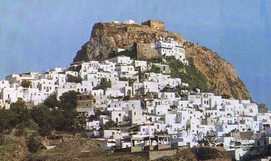

Το κάστρο της Σκύρου
¶γιε μου Γιώργη Σκυριανέ, μεγαλομάρτυρα τρανέ… |
 Μετά την κατάληψη της Κωνσταντινούπολης από τους Σταυροφόρους (1204), η Σκύρος περιήλθε στους Βενετούς. Στη διάρκεια του πρώτου Τουρκοβενετικού πολέμου, πυρπολήθηκε από τον Τουρκικό στόλο, ο οποίος όμως δεν κατόρθωσε να εκπορθήσει το κάστρο της, μέχρι την επιδρομή του πειρατή Χαϊρεντιν Μπαρμπαρόσα, οπότε υποτάχτηκε στους Τούρκους. Κατά την Ελληνική Επανάσταση το νησί αποτέλεσε καταφύγιο προσφύγων. Η Σκύρος απελευθερώθηκε μαζί με τις υπόλοιπες Σποράδες το 1829. | ||